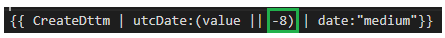
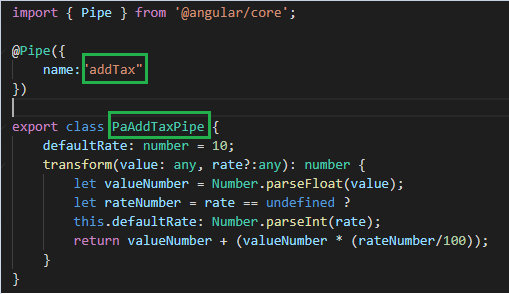
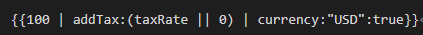

下面是三个自定义的pipe:
1. 通过管道转换UTC时间
Note:
type是-8,表示显示向前8小时的时间，如果type是24，表示显示明天的日期，可以通过改变type的数，显示任意的时间

//
output: {{ CreateDttm | utcDate:(value || -8) | date:"medium"}}
2. 根据选的百分比不同，通过管道里的算法计算rate
For Example:
运算结果：
{{100 | addTax:(taxRate || 0) | currency:"USD":true}}
具体代码：

用法：把pipe放在module里，然后引这个module到组件中
结合自定义的管道和angular内置管道，自定义pipe的输出作为内置pipe的输入：
